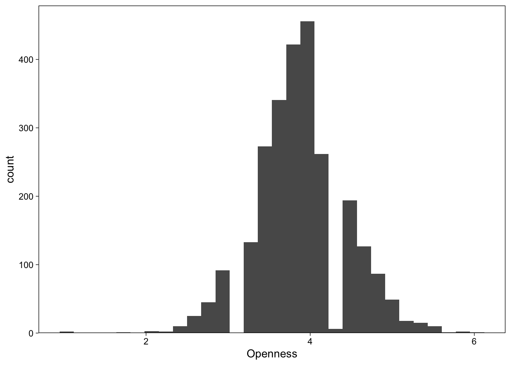
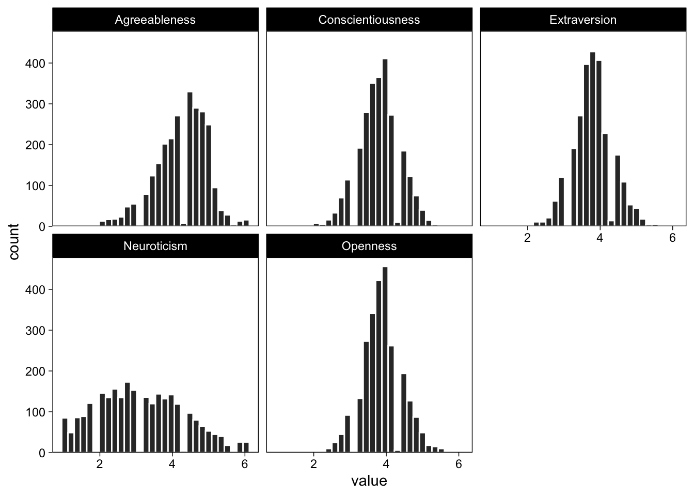
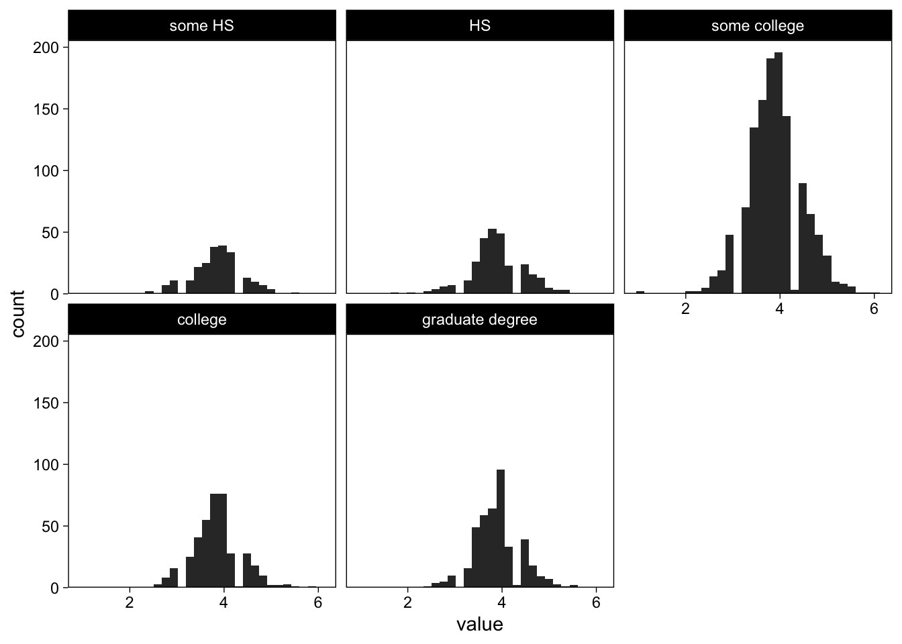
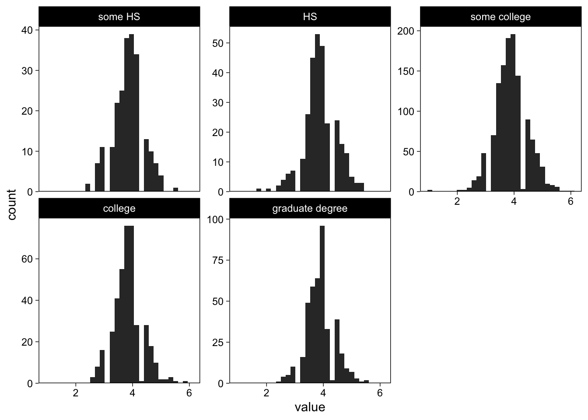
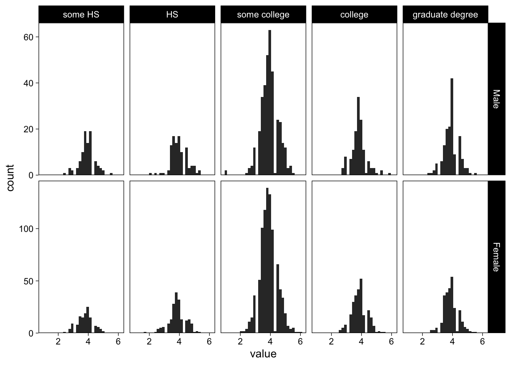
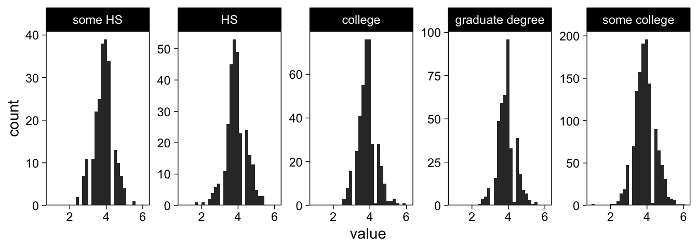

library(knitr)
library(scales)
library(psych)
library(tidyverse)How to create plots with subplots in R
data science
R
visualization
tutorial
Some tips on creating figures with multiple panels in R
Visualizations are great for learning from data and communicating the results of a statistical investigation. In this post, I illustrate how to create small multiples from data using R and ggplot2.
Small multiples display the same basic plot for many different groups simultaneously. For example, a data set might consist of a X ~ Y correlation measured simultaneously in many countries; small multiples display each country’s correlation in its own panel. Similarly, you might have conducted a within-individuals experiment, and would like to display the effects of the repeated-measures factors simultaneously at the average level, and at the individual level—thus showing each individual’s results in a separate panel. Whenever you would like to show the same figure, but separately for many subsets of the data, the appropriate google term is “small multiples”.
We’ll use the following R packages:
Example Data
The data I’ll use here consist of responses to the Big 5 personality questionnaire from various demographic groups, and is from the psych R package. I’ve computed a mean for each subscale:
dat <- as_tibble(bfi)| gender | education | age | Extraversion | Openness | Agreeableness | Neuroticism | Conscientiousness |
|---|---|---|---|---|---|---|---|
| Female | some college | 21 | 4.00 | 3.8 | 5.6 | 3.0 | 4.4 |
| Male | HS | 19 | 3.20 | 3.4 | 2.8 | 4.2 | 3.0 |
| Male | some HS | 19 | 3.75 | 5.0 | 3.8 | 3.6 | 4.8 |
| Male | some HS | 21 | 3.00 | 4.4 | 4.8 | 3.0 | 3.4 |
| Male | some HS | 17 | 4.20 | 4.4 | 2.8 | 2.6 | 3.8 |
| Male | graduate degree | 68 | 2.40 | 3.8 | 4.6 | 2.0 | 3.6 |
Univariate plots
I’ll start with displaying histograms of the outcome variables (the individual-specific Big 5 category means). Picking up a variable to plot in ggplot2 is done by specifying the column to plot, so to select a specific Big 5 category, I just tell ggplot2 to plot it on the x axis.
ggplot(dat, aes(x = Openness)) +
geom_histogram() +
# Fix bars to y=0
scale_y_continuous(expand = expansion(c(0, 0.05)))
Long format data
Next, we’ll be drawing the same figure, but display all Big 5 categories using small multiples. ggplot2 calls small multiples “facets”, and the operation is conceptually to subset the input data frame by values found in one of the data frame’s columns.
The key to using facets in ggplot2 is to make sure that the data is in long format; I would like to display histograms of each category in separate facets, so I’ll need to reshape the data from wide (each category in its own column) to long form (a column with category labels, and another with the value).
dat_long <- dat %>%
pivot_longer(Extraversion:Conscientiousness, names_to = "Scale")| gender | education | age | Scale | value |
|---|---|---|---|---|
| Female | some college | 21 | Extraversion | 4.0 |
| Female | some college | 21 | Openness | 3.8 |
| Female | some college | 21 | Agreeableness | 5.6 |
| Female | some college | 21 | Neuroticism | 3.0 |
| Female | some college | 21 | Conscientiousness | 4.4 |
| Male | HS | 19 | Extraversion | 3.2 |
The values for each Big 5 categories are now in the same column, called value. Each observation, or row in the data, contains all variables associated with that observation. This is the essence of long form data. We can now use the Scale variable to subset the data to subplots for each category.
Basic facets
Display all scales in small multiples
Now that value holds all mean Big 5 category values, asking ggplot() to plot it on the x-axis is not too meaningful. However, because we have another column identifying each observations’ (row) category, we can pass it to facet_wrap() to split the histograms by category. Making use of the long data form with facets is easy:
ggplot(dat_long, aes(x = value)) +
geom_histogram(fill = "grey20", col = "white") +
facet_wrap("Scale") +
scale_y_continuous(expand = expansion(c(0, 0.05)))
Perfect! The same works for any arbitrary variable that we can think of as a meaningful grouping factor.
Display different education levels’ openness in small multiples
Because the value column contains values of all scales, I need to specify which scale to display by subsetting the data. I use data wrangling verbs from the dplyr package to subset the data on the fly, and pass the resulting objects to further functions using the pipe operator %>%.
# Filter out all rows where category is "openness", and pass forward
filter(dat_long, Scale == "Openness") %>%
# Place value on x-axis
ggplot(aes(x = value)) +
scale_y_continuous(expand = expansion(c(0, 0.05))) +
# Histogram
geom_histogram(fill = "grey20") +
# Facet
facet_wrap("education")
That didn’t quite work, because in an observational study such as this one, the design is far from balanced; each education category has a different number of observations and thus the y-axis scales are different.
Adjusting facet scales
I can ask facet_wrap() to use different axis scales for each subplot. Note also that we can access the last plot using a shortcut:
last_plot() +
facet_wrap("education", scales = "free_y")
Brilliant.
Grid of facets
We repeatedly called facet_wrap("variable") to separate the plot to several facets, based on variable. However, we’re not restricted to one facetting variable, and can enter multiple variables simultaneously. To illustrate, I’ll plot all categories separately for each gender, using facet_grid()
last_plot() +
facet_grid(gender ~ education, scales = "free_y")
The argument to the left of the tilde in facet_grid() specifies the rows (here gender), the one after the tilde specifies the columns.
Ordering facets
Sometimes it is helpful to convey information through structure. One way to do this with subplots is to arrange the subplots in a meaningful manner, such as a data summary, or even a summary statistic. Ordering subplots allows the observer to quickly learn more from the figure, even though it still presents the same information, only differently arranged.
Order facets by number of observations
To order subplots, we need to add the variable that we would like to order by to the data frame. Here we add a “number of observations” column to the data frame, then order the facetting variable on that variable. The following code snippet takes all openness-rows, calculates the number of observations for each education level, and reorders the education factor based on the number. The result is visible in a figure where the number of observations in each facet increases from top left to bottom right.
dat_long %>%
filter(Scale == "Openness") %>%
add_count(education) %>%
mutate(education = reorder(education, n)) %>% # The important bit
ggplot(aes(x = value)) +
scale_y_continuous(expand = expansion(c(0, 0.05))) +
geom_histogram(fill = "grey20") +
facet_wrap("education", scales = "free_y", nrow = 1)
Reuse
Citation
BibTeX citation:
@online{vuorre2016,
author = {Matti Vuorre},
title = {How to Create Plots with Subplots in {R}},
date = {2016-03-15},
url = {https://sometimesir.com/posts/2016-03-15-ggplot-plots-subplots},
langid = {en}
}
For attribution, please cite this work as:
Matti Vuorre. 2016. “How to Create Plots with Subplots in
R.” March 15, 2016. https://sometimesir.com/posts/2016-03-15-ggplot-plots-subplots.